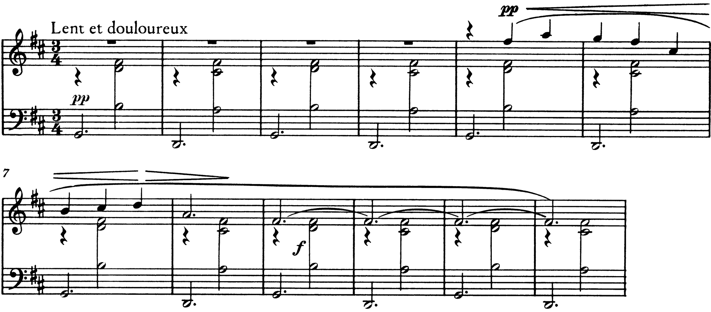

Riconoscere all’ascolto un modo dalle sue triadi, e un accordo che non ha funzione dal modo in cui si muove: settime che si alternano, ripieni reali e diatonici, quarte sovrapposte, triadi aumentate.
le successioni di accordi senza rapporti tra di loro (l’accordo singolo rimane come isolato, sospeso dall’obbligo di risolversi)
E. Surian, Manuale di storia della musica, vol. IV, p. 33, sulle Gymnopédies di Satie
B4Oltre la tonalità, pp. 238–258
D. D’Urso, C. Bertolini, Il linguaggio della musica, 5° anno: le successioni armoniche modali secondo Persichetti (p. 241), i colori modali (p. 244), la triade aumentata nel sistema esatonale (p. 249).
Per dare a un brano il colore di un modo «è necessaria la presenza di successioni armoniche appropriate»: anzitutto «evitare le armonie che contengono il tritono», che «suonano come accordi dominantici e rischiano di trasformare ogni modalità nella scala di DO maggiore»; poi affermare il modo con «la triade di tonica e [gli] accordi contenenti la nota modale», le triadi modali (D’Urso, Bertolini, p. 241, da V. Persichetti). Sulla finalis re: nel dorico il IV maggiore (sol–si♮–re), nel misolidio il ♭VII (do–mi–sol), nel lidio il II maggiore (mi–sol♯–si), nel frigio il ♭II (mi♭–sol–si♭).
L’esempio si ascolta due volte. Alla seconda, durante l’accordo centrale di ogni coppia di battute, la classe canta la nota che non appartiene a re maggiore né a re minore naturale: si♮, do♮, sol♯, mi♭. Poi si ascolta senza guardare, in ordine diverso, e si nomina il modo.
Sentire il ♭VII–I del misolidio come una cadenza plagale verso la sottodominante di un altro tono (do maggiore → re maggiore letto come IV–V di sol), e il IV maggiore del dorico come un minore melodico. Il criterio è il centro: se la musica si ferma sul re e vi resta, il do♮ e il si♮ non sono alterazioni di passaggio ma la collezione del modo.
Sulle bb. 1–12: si canta il basso, poi il fa♯ acuto degli accordi. Quale dei due accordi suona come «casa»? Che cosa accadrebbe, al terzo ascolto, se dopo la b. 12 il pianista suonasse la–do♯–mi–sol e poi re–fa♯–la?

Nel passo trascritto il basso alterna sol2 e re2 in minime puntate; sopra, sul secondo movimento, la sinistra e la destra aggiungono si–re–fa♯ e la–do♯–fa♯; la melodia entra alla b. 5, e alle bb. 9–12 il suo fa♯4 tenuto coincide con il fa♯4 dell’accordo. Surian elenca, fra i tratti delle Gymnopédies e delle Gnossiennes, «le melodie quasi totalmente diatoniche, perlopiù a gradi congiunti; le armonie con spiccate inflessioni modali; le successioni di accordi senza rapporti tra di loro», e ne ricava l’intento di «giungere alla completa staticità del movimento» (Manuale di storia della musica, vol. IV, pp. 33–34); poco oltre ricorda che in altre pagine di Satie «gli accordi si muovono per moto rigorosamente parallelo e le armonie sono costruite su quarte sovrapposte» (p. 35). Le bb. 1–12 della prima Gymnopédie lo verificano con due soli accordi. Sul sol2 del basso la destra e la sinistra formano sol–si–re–fa♯, una settima maggiore; sul re2, re–la–do♯–fa♯, un’altra settima maggiore. Nessuno dei due ha il tritono, nessuno dei due è una dominante; l’armatura è quella di re maggiore, ma il basso comincia sul sol e vi torna a ogni battuta dispari, e la collezione (sette suoni diatonici con il do♯) è quella del lidio di sol non meno che del maggiore di re. La melodia, entrata alla b. 5, non scioglie l’ambiguità: scende per grado congiunto e si ferma sul fa♯ (bb. 9–12), il suono comune ai due accordi.
Nessuno dei due accordi prevale per funzione: il sol prevale per posizione (cade sulle battute dispari e inizia il brano), il re per armatura. È la condizione che Surian descrive: l’accordo «rimane come isolato, sospeso dall’obbligo di risolversi» (p. 33). Il la–do♯–mi–sol, una settima di dominante con il tritono do♯–sol, trasformerebbe all’istante il re in tonica e il sol in sottodominante: basta un accordo con il tritono per riportare la funzione, che è la ragione per cui Persichetti chiede di evitarlo.
Chiamare la successione «IV7–I7» e leggerla come una cadenza plagale ripetuta. Una cadenza presuppone una gerarchia fra i due accordi, e qui la gerarchia è esattamente ciò che la scrittura sospende: la cifratura descrive gli accordi, non una funzione che non c’è.
De la Motte chiama ripieno, per analogia con i registri di mistura dell’organo, la condotta di accordi paralleli in Debussy, e ne distingue tre specie: il ripieno vero e proprio, che «consiste nella trasposizione esattamente parallela di un accordo» (p. 327); il ripieno tonale, «successioni parallele di accordi costituiti da suoni appartenenti a una sola tonalità», nel quale il trasporto «non è esatto» (p. 328, con un esempio dalla «Cathédrale engloutie»); il ripieno atonale, in cui i suoni di un accordo sono evitati nel successivo (p. 329; D. de la Motte, Manuale di armonia, La Nuova Italia 1988, cap. IX). Kostka e Payne usano i termini real planing e diatonic planing e osservano che il parallelismo serve a oscurare «qualunque senso di progressione funzionale» (Tonal Harmony, pp. 472–473).
Il ripieno reale ha bisogno di molte alterazioni, perché nessuna collezione diatonica contiene una triade maggiore su ogni grado: per questo, osservano Kostka e Payne, il centro diventa incerto (p. 473). Il ripieno diatonico resta nella collezione e varia la specie degli accordi; all’ascolto suona più «arcaico», vicino all’organum, ed è il caso della «Cathédrale». In entrambi i casi la melodia è la voce che conta, e gli accordi ne sono lo spessore: de la Motte paragona questo raddoppio ai registri di mistura, che rinforzano gli armonici di una sola linea senza aggiungere voci (pp. 326–327).
Dall’inizio fino a «Sonore sans dureté» e oltre: gli accordi che accompagnano il canto sono un ripieno reale o diatonico? Il criterio: se tutti gli accordi fossero della stessa specie, comparirebbero alterazioni estranee alla collezione del passo.
Diatonico. Kostka e Payne citano proprio il passo «Sonore sans dureté» come esempio di diatonic planing che armonizza una melodia di carattere salmodico (p. 473, es. 26-26); de la Motte porta la «Cathédrale» fra i ripieni tonali, con una successione di accordi di quarta e sesta che appartengono a una sola tonalità (p. 328). L’analisi del brano è l’oggetto della lezione 6 dell’unità 3.
Cifrare un ripieno diatonico grado per grado (I–ii–iii–V) e cercarvi una progressione: i gradi ci sono, la progressione no. E, nell’ascolto, scambiare un ripieno reale di triadi maggiori per una serie di dominanti secondarie: una dominante secondaria ha il tritono e risolve, la triade maggiore del ripieno né l’uno né l’altro.
«Un’armonia quartale è una sonorità derivata da quarte sovrapposte», quella quintale da quinte sovrapposte; quarta e quinta, osservano Kostka e Payne, «sembrano particolarmente adatte a evitare qualunque implicazione tonale tradizionale» (Tonal Harmony, p. 469). La triade aumentata, unica specie di triade del sistema esatonale, «è caratterizzata da una struttura che si ripete in forma invariata nel passaggio da uno stato all’altro dell’accordo»: i rivolti suonano come lo stato fondamentale (D’Urso, Bertolini, p. 249). In entrambi i casi l’orecchio non trova una fondamentale per gerarchia di intervalli: l’accordo è simmetrico, o quasi.
Si suonano al pianoforte una triade aumentata e i suoi due rivolti, poi un accordo di due quarte giuste e i suoi rivolti. Quale dei due accordi cambia suono quando cambia il basso?
La triade aumentata non cambia: i suoi rivolti sono ancora due terze maggiori sovrapposte (do–mi–sol♯, mi–sol♯–si♯, sol♯–si♯–re♯), e l’accordo ha soltanto quattro trasposizioni diverse. L’accordo di quarte, rivoltato, diventa quarta più seconda, o seconda più quarta: cambia colore, perché compare la seconda maggiore. È la stessa differenza fra un insieme perfettamente simmetrico e uno che non lo è.
Scambiare la triade aumentata per una dominante alterata (la quinta eccedente del V) e attendersi la risoluzione. Quando le triadi aumentate procedono parallele per tono, come in «Voiles», non c’è nulla da risolvere: sono gli accordi della collezione esatonale.
Per ciascun esempio, due ascolti. Si scrive: se gli accordi si muovono paralleli o con una condotta di parti; se sono tutti della stessa specie (ripieno reale), della specie che la collezione concede (ripieno diatonico), per quarte o per terze; se c’è un modo, quale e con quale triade modale.
Prima il centro; poi, sopra il centro, la triade che contiene la nota modale (IV maggiore nel dorico, ♭VII nel misolidio, II maggiore nel lidio, ♭II nel frigio). Un accordo con il tritono riporta la funzione e cancella il modo.
Si ascolta come si muove, non che cosa è: parallelo e sempre uguale (ripieno reale), parallelo e dentro una collezione (ripieno diatonico), per quarte o per triadi aumentate (accordi simmetrici), oppure alternato senza risolvere (Satie).
La lezione si chiude con il solfeggio parlato, cantato e ritmico. La lezione seguente riprende la questione dal lato opposto: la dominante che c’è, ma smette di risolvere.
Compiti per la prossima volta
Realizza il basso a quattro parti.
Sul quaderno, a matita. La foto del lavoro finito va su Classroom. Nel Workbook: apri l’esercizio C5-U4-L2-21 ↗
Compiti per la prossima volta
n. 170 e n. 171 parlato · n. 172 e n. 173 cantato · n. 174 e n. 175 ritmico
Ogni pezzo a tempo, senza fermarti: il parlato a nomi, il cantato prendendo il primo suono dalla tastiera, il ritmico battendo la pulsazione.
Scrivi la linea del basso sul quaderno, in chiave di basso: otto battute in 9/8, fa♯ minore. Il primo suono è la. Prima il riferimento, poi tutto due volte, ogni coppia di battute due volte, il collegamento 1–4, 3–6 e 5–8, e tutto per controllare.
Il riferimento: accordo di tonica e primo suono
Il dettato · otto battute
Le sezioni (riferimento, tutto, le coppie, il collegamento) si ascoltano una per una e si ripetono quanto serve; le fasi fanno la procedura della classe, con gli annunci e le pause, da qualunque punto.
Sul quaderno scrivi in testa la sigla C5-D-U04-L2. Si corregge all’inizio della prossima lezione.
Compiti per la prossima volta
Scrivi un contrappunto di quarta specie (la sincope) sopra il canto fermo, in modo dorico (finale re): nove battute. Comincia su una consonanza perfetta, alla cadenza la sensibile sale alla finale, niente quinte e ottave consecutive.
Sul quaderno, con la sigla C5-CP-U04-L2 in testa; la foto va su Classroom.
Realizza a quattro parti il basso senza numeri: sedici battute in 4/4, fa maggiore. Trova tu l’accordo di ogni nota (la regola dell’ottava è il punto di partenza) e scrivilo sotto; poi il soprano, poi le voci interne. Accordi che puoi usare: tutto quello studiato, e una modulazione a un tono vicino.
Sul quaderno, con la sigla C5-BD-U04-L2 in testa; la foto va su Classroom.
Armonizza a quattro parti il canto dato: sedici battute in 4/4, si minore. Prima le cadenze, poi il basso per intero, e solo alla fine contralto e tenore. Accordi che puoi usare: tutto quello studiato, e una modulazione a un tono vicino.
Sul quaderno, con la sigla C5-CD-U04-L2 in testa; la foto va su Classroom.
Scritto: Un basso di dodici battute, in 3/4 (Workbook, esercizio C5-U4-L2-21), sul quaderno; la foto va su Classroom. Solfeggio dal quaderno di lettura: parlato n. 170, 171; cantato n. 172, 173; ritmico n. 174, 175 (a tempo, senza fermarsi). Dettato C5-D-U04-L2 dalla pagina della lezione (sezioni da ascoltare, o le fasi della procedura guidata), sul quaderno con la sigla. Contrappunto di quarta specie sul canto fermo (C5-CP-U04-L2). Basso senza numeri da realizzare a quattro parti (C5-BD-U04-L2). Canto dato da armonizzare a quattro parti (C5-CD-U04-L2).
In classe
A nomi, a tempo, con la mano che batte. Chi si ferma riparte dalla battuta dopo.
Apri il n. 166 nel quaderno di lettura ↗ chiave di tenore · 2/2 · la maggiore
In classe
Si prende il tono dalla tastiera, si canta insieme; poi a gruppi.
Apri il n. 167 nel quaderno di lettura ↗ chiave di violino · 2/4 · si♭ maggiore
Apri il n. 168 nel quaderno di lettura ↗ chiave di violino · 3/4 · sol maggiore
In classe
Tutti insieme, battendo la pulsazione. Poi a file, due battute a testa.